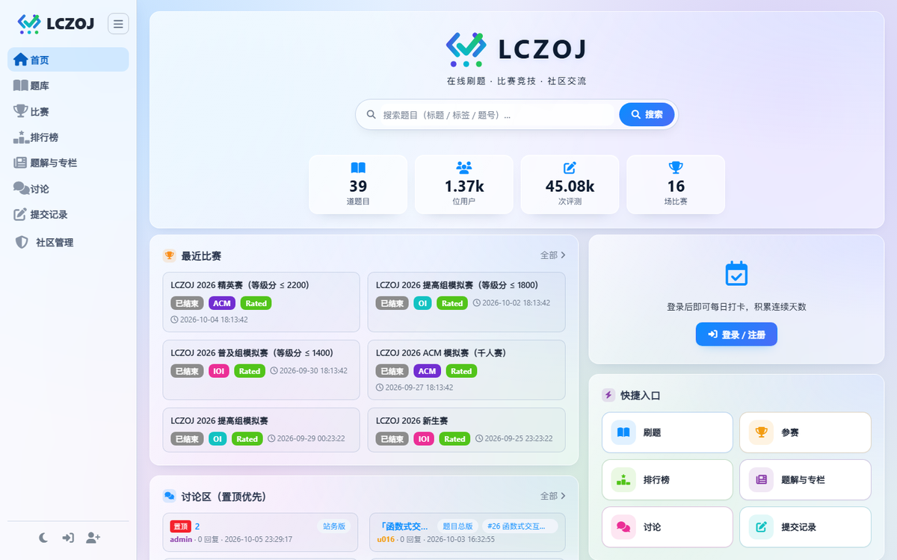
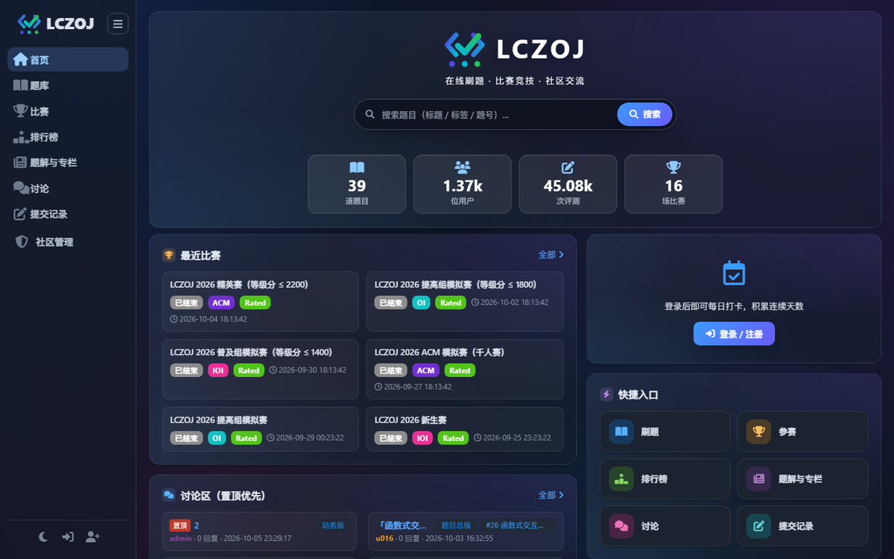

题库与评测
Markdown + LaTeX 题面、标签与难度筛选、子任务计分、题目级 / 提交级 O2 开关、Special Judge 与大数据包评测。
v2.9.1·MIT License·零运行时依赖
零 npm install、无需编译、无需独立数据库服务。基于 Node.js 内置模块构建，
一条命令部署到你自己的服务器，开箱就是一套完整的 OJ。
curl -fsSL https://raw.githubusercontent.com/lichenzhen0713/LCZOJ/master/bootstrap.sh | sudo bash
界面预览
从题库、比赛到管理后台，全部由原生 JavaScript 实现。8 套主题预设与 12 项自定义配色，夜间模式可定时、可手动切换。


首页 · 题库 · 比赛 · 排行榜 · 讨论区 · 管理后台，同一套界面语言
功能特性
题库、比赛、题解、社区、权限、外观与运维全部内置，不依赖任何第三方服务。
Markdown + LaTeX 题面、标签与难度筛选、子任务计分、题目级 / 提交级 O2 开关、Special Judge 与大数据包评测。
普通题、提交答案题、IO 交互题与函数式交互题共用同一套判题开关，交互器与 checker 可按题配置。
ACM / IOI / OI 三种赛制、报名制、私有赛题、OI 赛中隐藏成绩、Rated 与 Codeforces 风格等级分结算。
题解与专栏的分类、草稿、审核流、评论 @ 提及与自动分页；讨论区、置顶、积分排行榜与反馈举报。
8 项权限位自由组合，scrypt 密码哈希、邮箱验证注册、操作留痕并通知本人，管理员动作可追溯。
8 套主题预设与 12 项自定义配色，圆角、字号、字体、页面宽度均可调，修改即时预览、暗色独立配色。
后台一键更新、命令行更新、环境自检、评测缓存自动清理、健康检查与数据库备份，升级不动站点数据。
并行判题 1~16 路按 CPU 自适应，单测试点约 0.4 秒；重判按题目、比赛或提交区间执行。
Linux 一行脚本、Docker 自动安装、宝塔 / 小皮面板、Windows 双击安装，四种方式任选其一。
技术栈
后端只使用 Node.js 内置模块，前端是零框架的原生 SPA；数据落在内置 SQLite，备份就是复制一个目录。
lczoj/
├─ server.js HTTP 服务 + 全部 API（0 依赖）
├─ src/ 20+ 后端模块
│ ├─ judge.js 判题引擎 · 1~16 路并行
│ ├─ db.js node:sqlite 建表 / 迁移
│ └─ …
├─ public/ 原生 SPA（无框架）
├─ deploy/ systemd / Docker / 面板 / 更新
└─ data/ SQLite + 测试数据（备份即复制）快速开始
四种部署方式任选其一。初始管理员账号为 admin，密码在首次启动时随机生成。
curl -fsSL https://raw.githubusercontent.com/lichenzhen0713/LCZOJ/master/bootstrap.sh | sudo bash
自动识别发行版，安装 Node.js 与全部评测语言编译器，注册 systemd 开机自启并放行 80 端口。国内网络可改用 Gitee 源：
curl -fsSL https://gitee.com/lichenzhen0713/LCZOJ/raw/master/bootstrap.sh | sudo bash
脚本最后会输出外网访问地址，并直接显示随机生成的 admin 初始密码（同时写入 data/admin-password.txt）。
用 admin 与初始密码登录，进入「编辑资料」修改密码，然后在管理后台确认评测语言与站点设置。
curl -fsSL https://raw.githubusercontent.com/lichenzhen0713/LCZOJ/master/docker-bootstrap.sh | sudo bash
未安装 Docker 时会自动安装并设为开机自启，然后构建镜像（镜像内已包含全部评测语言）并启动容器。
站点数据位于数据卷 lczoj-data，删除容器不影响数据；迁移时备份该数据卷即可。
宝塔：软件商店 → Node.js 版本管理器或 PM2 管理器；小皮：软件商店或官方安装包。
cd /www/wwwroot/你的域名 && node deploy/panel-install.js
脚本会准备环境、后台启动服务（默认 3000 端口）并生成反向代理配置 deploy/panel-nginx.conf。
把配置合并到站点，或使用面板「反向代理」指向 http://127.0.0.1:3000，再申请 SSL 证书。
例如解压到 D:\LCZOJ，无需安装任何依赖。
脚本自动安装 Node.js 与可选评测语言，启动服务并输出初始管理员密码。
已安装 Node.js ≥ 22.5 时也可在项目目录直接执行 node server.js，用 set PORT=8080 更换端口。
部署前后都建议执行 node deploy/check-env.js 自检 Node 版本、端口占用、数据目录权限与各语言编译器。
完整的参数与排错见 部署文档。
常见问题
只需要 Node.js ≥ 22.5（推荐 v24）。评测语言对应的编译器按需安装，未安装的语言会标记为「未安装」，不影响站点运行。可用 node deploy/check-env.js 检查。
npm install 吗？是。后端全部基于 Node.js 内置模块（node:http、node:sqlite、node:crypto 等），前端是原生 JavaScript SPA，没有 node_modules，也不需要构建。
全部位于项目下的 data/ 目录（SQLite 数据库、题目测试数据、附件与头像）；Docker 部署位于数据卷 lczoj-data。备份就是复制该目录或数据卷。
Python 3、JavaScript、C++ 14 / 11 / 98、C（C11）、Java 8+、Pascal、PHP、Go（≥ 1.21）与 Rust，共 10 种。可在 src/config.js 中扩展。
管理员可在「系统设置 → 版本更新」一键升级（默认先备份数据库），也可以执行 node deploy/update.js。Docker 部署请在宿主机使用 node deploy/update.js --docker 重建容器。
可以。项目使用 MIT 许可证，可自由使用、修改与商用，请保留版权声明。完整条款见 LICENSE。
文档
官方文档已内置在官网：新手部署、Docker、面板、更新、使用说明、交互题、积分规则与版本日志，支持全文搜索。